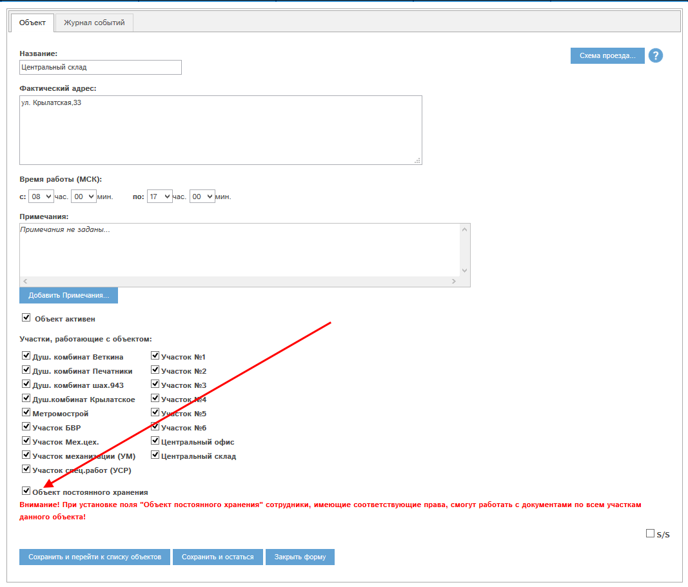

В программе «Мобильный офис» существует возможность разрешить сотрудникам работать с документами не только участков, отмеченных в их картах, но и с документами для сочетания объект постоянного хранения+любой участок этого объекта.
Эти дополнительные возможности распространяются на:
И на отчеты:
В программе выделено 4 объекта постоянного хранения:
Для того, чтобы дать сотруднику возможность работать с документами этих объектов постоянного хранения, необходимо выделить сотруднику соответствующие права:
Для того, чтобы назначить еще объекты постоянного хранения, необходимо в карте назначаемого объекта проставить флаг «Объект постоянного хранения», и выделить права на работу с ним требуемым сотрудникам:

Рис. 2.1 Флаг «Объект постоянного хранения» в карте объекта Центральный склад.